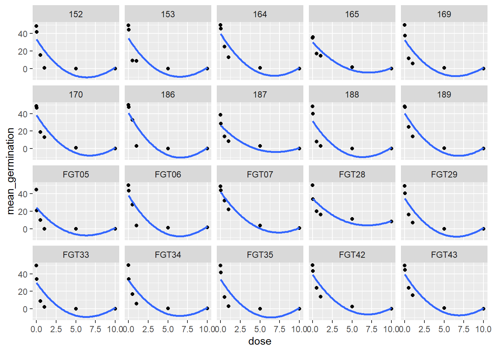
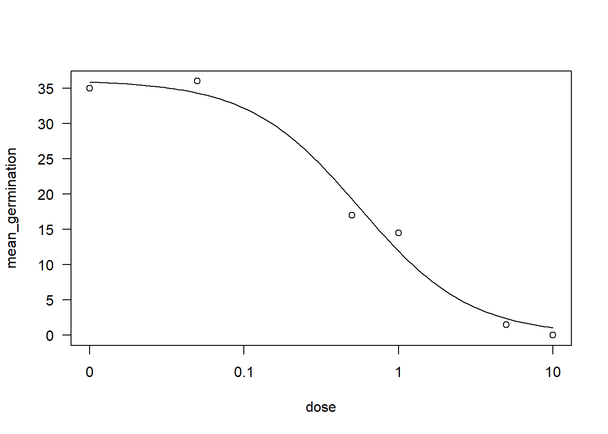
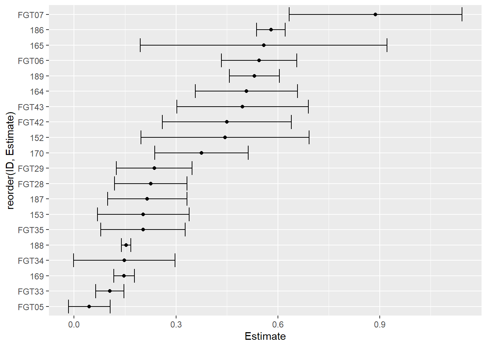

library(gsheet)
library(dplyr)
library(tidyverse)
library(ggplot2)
pyra <- gsheet2tbl("https://docs.google.com/spreadsheets/d/1bq2N19DcZdtax2fQW9OHSGMR0X2__Z9T/edit#gid=465348652")
pyra2 <- pyra |>
group_by(code, state, dose) |>
summarise(mean_germination = mean(germination), .groups = "drop")1. Regressão não-linear
São adotadas as análises de regressão não-linear em estudos que apresentam relações complexas entre as variáveis, que não é capaz de ser explicados com modelos de regressão linear.
O conjunto de dados importado acima tem duas replicatas para cada nível de fator, para que facilite a sua análise, será agrupado as replicatas em um único dado, pegando a média deles.
Visualização dos dados
pyra2 |>
ggplot(aes(dose, mean_germination))+
geom_point()+
geom_smooth(span = 3, se = FALSE)+
facet_wrap(~code)
Nota-se que o conjunto de dados não segue o modelo linear e nem o modelo quadrático.
2. Estimativa da EC50
EC50 - Concentração efetiva de fungicida(mg/L) capaz de inibir 50% da germinação de conídios.
Utiliou um modelo não-linear para análise de regressão, e a partir dos parâmetros da equação (coeficiente angular e coeficiente linear) é estimada a EC50.
Usou o pacote drc e as funções ED(), drm() e o argumento fct = LL.3() (log-logistic de 3 parâmetros).
library(drc)
isolado165 <- pyra2 |>
filter(code == "165")
drc1 <- drm(mean_germination ~ dose, data = isolado165,
fct = LL.3())
AIC(drc1) [1] 31.55522plot(drc1) 
ED(drc1, 50, interval = "delta") #O interval = delta fornece o intervalo de confiança
Estimated effective doses
Estimate Std. Error Lower Upper
e:1:50 0.55840 0.11420 0.19498 0.92182A EC50 pode ser estimada a partir do pacote ec50estimator e a função estimate_EC50().
No exemplo a seguir foi usado o argumento fct = drc::LL.3().
library(ec50estimator)
df_ec50 <- estimate_EC50(mean_germination ~ dose,
data = pyra2,
isolate_col = "code",
interval = "delta",
fct = drc::LL.3())
df_ec50 ID strata Estimate Std..Error Lower Upper
1 152 0.44435629 0.077789237 0.196796222 0.6919164
2 153 0.20379664 0.042373512 0.068945217 0.3386481
3 164 0.50775844 0.047248266 0.357393370 0.6581235
4 165 0.55839613 0.114195113 0.194976315 0.9218159
5 169 0.14722311 0.009555688 0.116812646 0.1776336
6 170 0.37503889 0.043207328 0.237533889 0.5125439
7 186 0.57975744 0.013332268 0.537328208 0.6221867
8 187 0.21563338 0.036639446 0.099030315 0.3322365
9 188 0.15297172 0.004284691 0.139335920 0.1666075
10 189 0.53106193 0.023130936 0.457448972 0.6046749
11 FGT05 0.04483862 0.019290890 -0.016553601 0.1062308
12 FGT06 0.54497946 0.034834602 0.434120211 0.6558387
13 FGT07 0.88770053 0.079917704 0.633366725 1.1420343
14 FGT28 0.22608141 0.033600742 0.119148854 0.3330140
15 FGT29 0.23601652 0.034933881 0.124841318 0.3471917
16 FGT33 0.10481627 0.013065221 0.063236910 0.1463956
17 FGT34 0.14773114 0.047003373 -0.001854568 0.2973169
18 FGT35 0.20315392 0.038984604 0.079087515 0.3272203
19 FGT42 0.45000559 0.059685890 0.260058448 0.6399527
20 FGT43 0.49589549 0.060850771 0.302241178 0.6895498Para uma melhor visualização das estimativas de EC50 foi plotado um gráfico utilizando as funções geom_point e geom_errorbar.
df_ec50 |>
ggplot(aes(reorder(ID, Estimate), Estimate))+
geom_point()+
geom_errorbar(aes(ymin = Lower, ymax = Upper))+
coord_flip()
Os isolados apresentaram valores distintos de EC50 entre si.